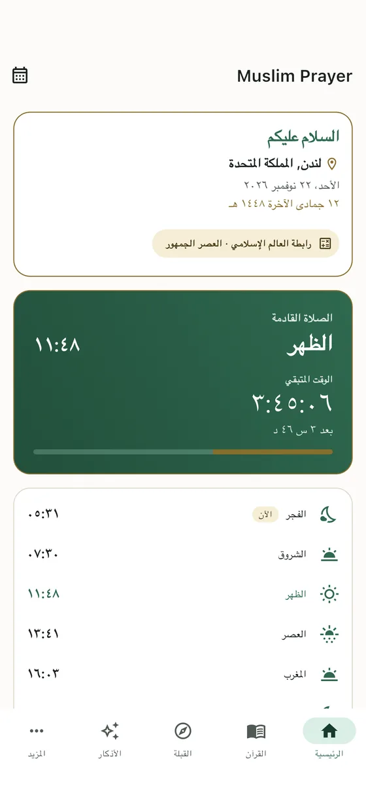

المساعدة والدعم
Muslim Prayer
مواقيت الصلاة لمدينتك، وتنبيهات الأذان، والقرآن الكريم بالعربية، واتجاه القبلة، والأذكار والتسبيح، والتقويم الهجري، في تطبيق واحد هادئ. تجد هنا إجابات عن أسئلتك، ويمكنك مراسلتنا.

المساعدة حسب الموضوع
ماذا يحتوي التطبيق
مواقيت الصلاة
مواقيت اليوم مع عدّ تنازلي حتى الصلاة القادمة، وجدول شهري. عشر طرق حساب وتعديل يدوي لكل صلاة.
إشعارات الأذان
اختر لكل صلاة الأذان أو صوتًا قصيرًا أو الصمت. تُجدول على جهازك.
القبلة
الاتجاه انطلاقًا من مدينتك المختارة، مع بوصلة حيّة على الأجهزة المزوّدة ببوصلة.
القرآن الكريم
النص العربي كاملًا للقراءة دون اتصال، مع البحث والعلامات المرجعية ونسبة التقدم في القراءة.
الأذكار والتسبيح
أذكار الصباح والمساء وبعد الصلاة وغيرها بالعربية مع مراجعها، وعدّاد رقمي.
التقويم الهجري ورمضان
تقويم هجري شهري، ووقتا السحور والإفطار، وإمساكية رمضان، ومتابعة خاصة للصيام.
معلومة مهمة عن مواقيت الصلاة
مواقيت الصلاة والتواريخ الهجرية محسوبة. وهي تعتمد على الموقع وطريقة الحساب والإعدادات التي تختارها، وقد تختلف عن مسجدك أو الجهة المعتمدة في بلدك ببضع دقائق، أو بيوم أو يومين في التواريخ الهجرية.
عند الاختلاف، اتبع المصدر الذي تثق به. ويمكنك تعديل وقت كل صلاة والتاريخ الهجري داخل التطبيق.
الإصدار الذي يشمله هذا الموقع
Muslim Prayer 1.0.0 لأجهزة iPhone (نظام iOS 15 أو أحدث). مجاني، بلا حساب وبلا إعلانات في هذا الإصدار. التطبيق متاح بالعربية والإنجليزية والفرنسية والإسبانية والإيطالية والألمانية.